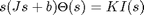
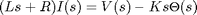
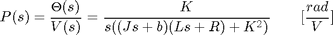
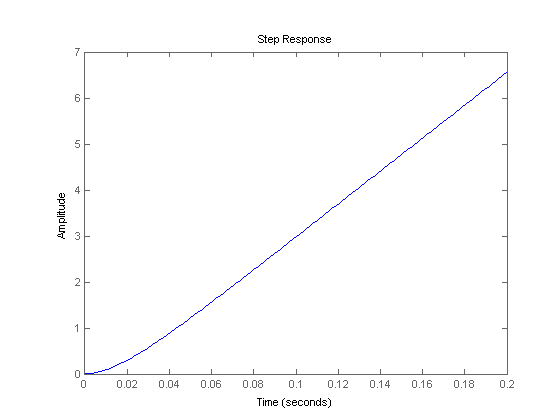

DC Motor Position: System Analysis
Key MATLAB commands used in this tutorial are: tf , step , isstable , pole , feedback , pzmap , damp
Contents
From the main problem, the dynamic equations in the Laplace domain and the open-loop transfer function of the DC Motor are the following.
(1)
(2)
(3)
For the original problem setup and the derivation of the above equations, please refer to the DC Motor Position: System Modeling page.
For a 1-radian step reference, the design criteria are given are the following.
- Settling time less than 0.040 seconds
- Overshoot less than 16%
- No steady-state error, even in the presence of a step disturbance input
Open-loop response
First create a new m-file and type in the following commands (refer to the main problem for the details of getting these commands).
J = 3.2284E-6;
b = 3.5077E-6;
K = 0.0274;
R = 4;
L = 2.75E-6;
s = tf('s');
P_motor = K/(s*((J*s+b)*(L*s+R)+K^2));
Now let's see how the uncompensated open-loop system performs. Specifically, we will use the MATLAB command step to analyze the open-loop step response. Add the following commands onto the end of the m-file and run it in the MATLAB command window and you will get the associated plot shown below.
t = 0:0.001:0.2; step(P_motor,t)
From the above plot, we can see that when 1 volt is applied to the system the motor position grows unbounded. This is obviously at odds with the given requirements, in particular, that there be no steady-state error. The open-loop response of the system is not even stable. Stability of a system can be verified with the MATLAB command isstable where a returned value of TRUE (1) indicates that the system is stable and a returned value of FALSE (0) indicates that the system is not stable.
isstable(P_motor)
ans =
0
Stability of the system can also be determined from the poles of the transfer function where the poles can be identified using the MATLAB command pole as shown below.
pole(P_motor)
ans =
1.0e+06 *
0
-1.4545
-0.0001
As indicated by this function, one of the poles of the open-loop transfer function is on the imaginary axis while the other two poles are in the left half of the complex s-plane. A pole on the imaginary axis indicates that the free response of the system will not grow unbounded, but also will not decay to zero. Even though the free response will not grow unbounded, a system with a pole on the imaginary axis can grow unbounded when given an input, even when the input is bounded. This fact is in agreement with what we have already seen. In this particular case, the pole at the origin behaves like an integrator. Therefore, when the system is given a step input its output continues to grow to infinity in the same manner that an integral of a constant would grow to infinity as the upper limit of the integral is made larger.
Closed-loop response
Let's now consider the closed-loop response of the system where the system schematic has the following structure.

The closed-loop transfer function for the above with the controller C(s) simply set equal to 1 can be generated using the MATLAB command feedback as shown below.
sys_cl = feedback(P_motor,1)
sys_cl =
0.0274
----------------------------------------------------
8.878e-12 s^3 + 1.291e-05 s^2 + 0.0007648 s + 0.0274
Continuous-time transfer function.
The corresponding unit step response can be generated by adding the above and following command to your m-file. The annotations for the peak response, settling time, and final value can be added to the plot from the right-click menu under Characteristics.
step(sys_cl,t)

Examining the above closed-loop step response, the addition of feedback has stabilized the system. In fact, the steady-state error appears to be driven to zero and the overshoot is less than 16%, though the settle time requirement is not met. The character of the resulting step response is again indicated by the location of the poles of the system's transfer function just like the system's stability properties were. The MATLAB command pzmap will plot the poles (and zeros) of a given transfer function as shown below.
pzmap(sys_cl)

The above plot shows that the closed-loop system has one real pole at -1.45e6 and a pair of complex poles at -29.6+35.3j and -29.6-35.3j as indicated by the locations of the blue x's. The damping and natural frequencies associated with these poles can be determined by right-clicking on the associated poles in the resulting plot. This information can also be determined using the MATLAB command damp as shown below.
damp(sys_cl)
Eigenvalue Damping Frequency
-2.96e+01 + 3.53e+01i 6.43e-01 4.61e+01
-2.96e+01 - 3.53e+01i 6.43e-01 4.61e+01
-1.45e+06 1.00e+00 1.45e+06
(Frequencies expressed in rad/seconds)
Since the one real pole is so much faster than the complex conjugate poles (its real part is much more negative) its effect on the dynamic response of the system will be mimimal. Therefore, the damping (zeta = 0.643) and the natural frequency (Wn = 46.1) of the complex conjugate poles will primarily indicate the response of the closed-loop system.
Adding the following commands to your m-file will calculate the overshoot and 2% settle time predicted by these poles assuming that they dominate, in other words, that we have a canonical underdamped second-order system.
[Wn,zeta,poles] = damp(sys_cl); OS = exp((-zeta(1)*pi)/sqrt(1-zeta(1)^2)) Ts = 4/(zeta(1)*Wn(1))
OS =
0.0716
Ts =
0.1351
The above results closely match the overshoot and settle time from the step response plot above which explicitly captured the effect of the third, non-dominant pole.
Throughout the rest of the pages of this example, different controllers will be designed to reduce the settle time of the closed-loop step response to meet the given 40 millisecond requirement while still meeting the other system requirements, including the zero steady-state error in the presence of a step disturbance.